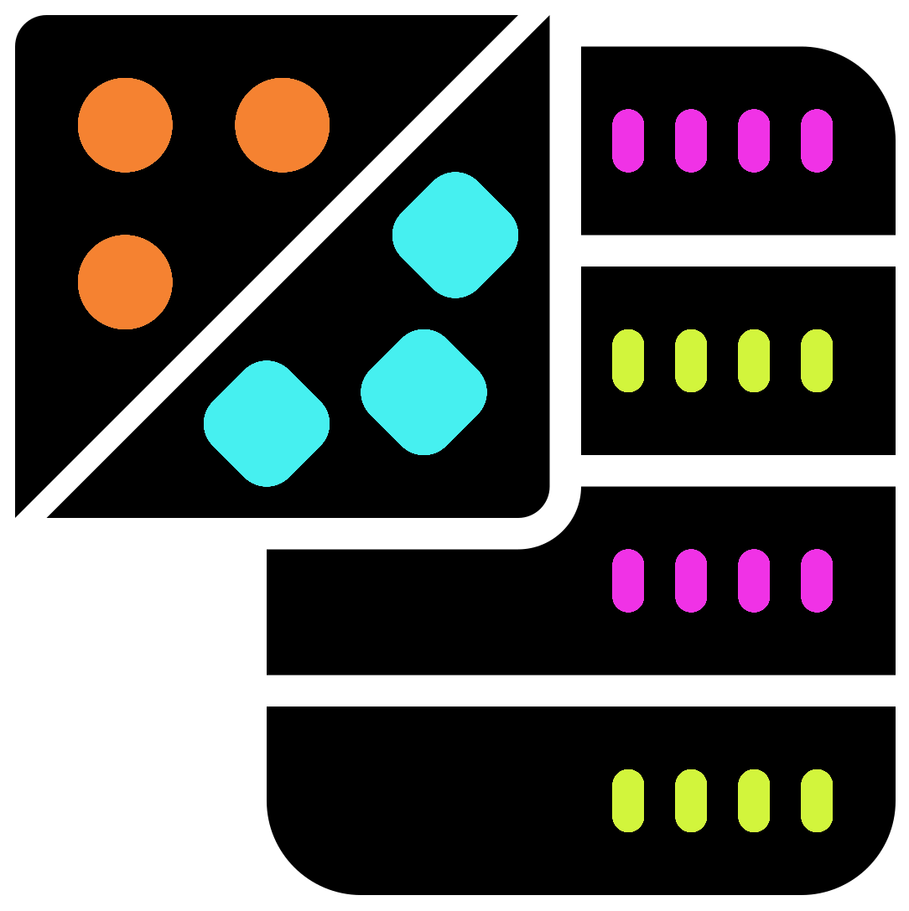
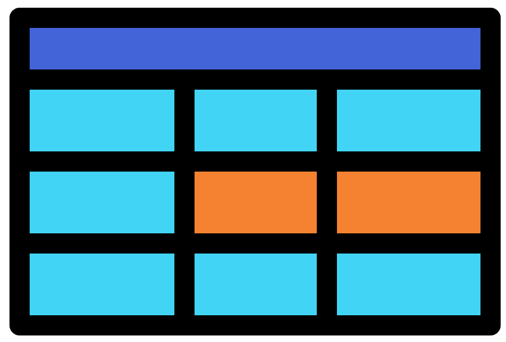

Chapter 16 Beta

In this chapter we are going to carry out beta diversity analysis. This will include the production of ordination plots and statistical analysis.
When carrying out beta diversity all samples are compared in a pairwise manner. Using various metrics a table of pairwise distances is created. These distances are dissimilarity measures with smaller values indicating higher similarity and larger values representing higher dissimilarity.
With these dissimilarity measures we can produce scatter plots based visualisations (e.g. PCoA, & NMDS plots). Samples with low dissimilarity (i.e. similar samples) will be close to each other (cluster). Samples with high dissimilarity will be apart from each other. In a perfect example samples from the same group will form clusters that are distinct from the clusters of other groups.
In this chapter we will:
- Calculate beta diversity ordination metrics and plot them as a scatter plot.
- Determine if there is a statistical difference between beta diversity metrics of sample groups.
16.1 Beta: setup
We will use a new notebook called "6-beta_diversity.ipynb". Add the following to the top of this new notebook to load the required libraries/packages and data.
16.2 Beta: ordination
In this section we will ordinate our data with the phyloseq::ordinate() function.
We'll use the MDS method (AKA PCoA).
This will be done with the Weighted Unifrac metric as the beta diversity dissimilarity scores.
This uses the count data along with the phylogenetic distances to calculate pairwise dissimilarity.
#Ordinate data
ord.mds.wunifrac <- phyloseq::ordinate(pseq_rarefy, method = "MDS", distance = "wunifrac")To see the different methods and distances that can be used please try ?phyloseq:ordinate and phyloseq::distanceMethodList respectively.
For more information about the different distances please see the APPENDIX.
16.3 Beta: plot ordination

Now that we have our ordination we can plot it.
The script below uses phyloseq::plot_ordination() to plot our ordination.
It needs the phyloseq object used to create the ordination (for the metadata) and the ordination data itself.
We will add the options color = and shape = to colour the points by site and shape the points by media.
#Plot ordination
nmds.wunifrac <- phyloseq::plot_ordination(pseq_rarefy, ord.mds.wunifrac,
color = "site", shape = "media")
#Save ggplot2 object with ggsave
ggsave(filename = "./Beta_diversity_mds_wunifrac_media_site.png", plot = nmds.wunifrac,
device = "png", dpi = 300, units = "mm", height = 125, width = 150)
#Display plot
IRdisplay::display_png(file="./Beta_diversity_mds_wunifrac_media_site.png")In this plot we can see that there are 3 main clusters:
- TSA
- ENV
- CVP & KBC
A very important feature of ordination plots is the percentage values on the axes. These are the percentage variation explained values. These values show how much of the variation of the data is explained by each axis. We need these as we are converting high dimensional data (many pairwise comparisons) into a 2 dimensional plot.
In our plot axis 1 has a very high percentage variation explained value of 72.5%. This indicates that most of the variation in our data is explained by the differences between the media samples (CVP, KBC, & TSA) and the ENV samples. This is because the ENV samples are far removed (large distances) from the media samples in terms of axis 1.
On the other hand, axis.2 (15.8%) seems to be primarily showing the difference between the TSA samples and the other samples, and within the TSA samples.
The higher the total variation explained value is, the better our plot represents the beta diversity in our data. In this case the total is >88% which is very good.
- <30% is poor
- >30% is not very good
- >50% is good
- >70% is very good
- >90% is exceptional
Additionally, we can see that there seems to be some separation of the sites within the different media groups. This is clear in TSA and ENV but not in CVP and KBC since the cluster is very tight (short distances).
16.4 Beta: statistics

For our beta diversity we will carry out PERMANOVA analysis for the media groupings. This will be carried out for all the samples and in a pairwise manner.
PERMANOVA is a good test in this case to determine if there is a significance difference between the distances of groups. This allows us to determine if the clustering of groups is significant.
For more info on PERMANOVA, Wikipedia is a good start.
16.4.1 PERMANOVA

We will carry out a PERMANOVA test on all the samples based on media.
This will help us determine if there are any differences between groupings but not which groupings.
Prior to PERMANOVA we need to create a matrix containing all the sample paired distance values.
We will use the function phyloseq::distance().
#PERMANOVA
#Produce distance matrix
wunifrac_dist_mat <- phyloseq::distance(pseq_rarefy, method="wunifrac")With the distance matrix we can carry out a PERMANOVA test with vegan::adonis2().
This requires the metadata in the form of a data frame.
In this case we can assess if there are any differences by media and by site (media+site).
#Extract metadata data frame from phyloseq
metadf <- data.frame(phyloseq::sample_data(pseq_rarefy))
#PERMANOVA/ADONIS of media and site
wunifrac_adonis <- vegan::adonis2(wunifrac_dist_mat ~ media+site, data = metadf, by = "margin")
wunifrac_adonisThere is a lot of information in the resulting table.
We are primarily interested in the P-value column (Pr(>F)).
We can see that significant differences are found within the groups for media (P = 0.001) and site (P = 0.018).
16.4.2 Pairwise PERMANOVA

We will now see which media groups are significantly different to each other.
We will do this with pairwise PERMANOVA tests.
Unfortunately the vegan library does not have a function to do this so we will need to do some scripting.
The first step is to get every combination of groupings with the combn() and unique() functions.
#Pairwise comparisons
#Get combinations of unique media values
cbn <- combn(x = unique(metadf$media), m = 2)
cbn
#First combination
cbn[,1]16.4.2.1 Pairwise PERMANOVA on one combination
For demonstration purposes we will first carry out the pairwise PERMANOVA on the 1st grouping combination.
With the first media combination (CVP & ENV) we can subset our phyloseq object so it only contains those samples.
Additionally, we can extract the metadata from this subsetted phyloseq object.
#Subset phyloseq so it only contains CVP & ENV samples (1st combination)
pseq_rarefy_subset <- phyloseq::subset_samples(pseq_rarefy, media %in% cbn[,1])
#Metadata data frame
metadf_subset <- data.frame(phyloseq::sample_data(pseq_rarefy_subset))
metadf_subsetWith this info we can calculate the distances and then carry out the PERMANOVA.
#Weighted unifrac distance calculation
wunifrac_dist_mat <- phyloseq::distance(pseq_rarefy_subset, method="wunifrac")
#PERMANOVA/ADONIS of media
wunifrac_pairwise_adonis <- vegan::adonis2(wunifrac_dist_mat ~ media, data = metadf_subset, by = "margin")
wunifrac_pairwise_adonisWe can see that there is a significant difference between the CVP and ENV samples (P = 0.01).
16.4.2.2 Pairwise PERMANOVA on all combinations
It would be quite inefficient to type the above script for each combination. We will therefore create a script with a loop to automatically run the code for each combination. Additionally, we will create an empty data frame before the loop. This will be used to store the comparison info and the P-values.
Create the below script in a new code block, reading the annotation to help understand how it works.
#Pairwise comparison loop
#Get combinations of unique media values
cbn <- combn(x = unique(metadf$media), m = 2)
#Create empty final data frame with 4 columns
# and a number of rows equal to the the number of combinations
pairwise_permanova_df <- as.data.frame(matrix(data = NA, nrow = ncol(cbn), ncol = 4))
#Add column names
colnames(pairwise_permanova_df) <- c("1","2","p","p.adj")
#Loop through the combinations
for(i in 1:ncol(cbn)){
#Subset to media phyloseq
#Ensure to change metadata group if using different grouping (media)
pseq_rarefy_subset <- phyloseq::subset_samples(pseq_rarefy, media %in% cbn[,i])
#Metadata data frame
metadf_subset <- data.frame(phyloseq::sample_data(pseq_rarefy_subset))
#Weighted unifrac distance calculation
wunifrac_dist_mat <- phyloseq::distance(pseq_rarefy_subset, method="wunifrac")
#PERMANOVA/ADONIS of media
#Ensure to change metadata group if using different grouping (media)
wunifrac_pairwise_adonis <- vegan::adonis2(wunifrac_dist_mat ~ media, data = metadf_subset, by = "margin")
#Add the group names and p-value to the main data frame
pairwise_permanova_df[i,1:2] <- cbn[,i]
pairwise_permanova_df[i,3] <- wunifrac_pairwise_adonis[1,"Pr(>F)"]
}
#View data frame
pairwise_permanova_dfAll our media groupings are significantly different to each other (0.001).
You may have noticed that the p.adj column is empty.
We will add adjusted P-values to these columns.
It is always important to use adjusted P-values when carrying out multiple significant tests such as with pairwise comparisons.
We'll use the function p.adjust() to add Benjamin-Hochberg (method = "BH") adjusted values values.
#Add adjusted P-values
pairwise_permanova_df$p.adj <- p.adjust(pairwise_permanova_df$p, method = "BH")
#View data frame
pairwise_permanova_df
#Write to a file
write.table(x = pairwise_permanova_df, file = "pairwise_permanova_media_wunifrac.tsv",
quote = FALSE, row.names = FALSE)Brilliant, the adjusted P-values are still significant, in fact they did not even change. This shows us that the different media groupings are significantly different. This makes sense from our taxonomy, alpha diversity, and beta diversity analyses. However, it is hard to see the separation of the CVP and KBC samples in the MDS plot.
16.5 Beta: Facet zoom

The ggforce library is a very powerful library to edit ggplot2 objects.
One of its functions, ggforce::facet_zoom(), allows us to zoom into a specific part of a plot whilst also showing the main plot.
We will use this to zoom into the CVP and KBC samples within the weighted unifrac MDS plot.
#Ordinate data
ord.mds.wunifrac <- phyloseq::ordinate(pseq_rarefy, method = "MDS", distance = "wunifrac")
#Plot ordination
nmds.wunifrac <- phyloseq::plot_ordination(pseq_rarefy, ord.mds.wunifrac,
color = "site", shape = "media") +
#Zoom into CVP and KBC samples specified by the metadata category
#Zoom.size = 1 so the zoom section is the same size as the main plot
#Zoom.size = 2 would mean the zoom plot is 2 times the size of the original
ggforce::facet_zoom( xy = media == c("CVP","KBC"), zoom.size = 1)
#Save ggplot2 object with ggsave
ggsave(filename = "./Beta_diversity_mds_wunifrac_media_site_zoom.png", plot = nmds.wunifrac,
device = "png", dpi = 300, units = "mm", height = 100, width = 200)
#Display plot
IRdisplay::display_png(file="./Beta_diversity_mds_wunifrac_media_site_zoom.png")With the zoomed section we can more clearly see there is a difference between the CVP and KBC samples. We can also see that the samples seem to slightly cluster by the site, especially for the KBC samples.
There are many other things you can do with ggplot2 objects, too many to teach in this workshop.
How you want your plots will be highly dependant on your own data.
There are various resources in the APPEDNDIX to look at.
16.6 Beta: subset samples

Another plot we can quickly make is to subset the phyloseq object to remove the ENV samples.
The ENV samples are causing the biggest difference between the samples.
To see the differences between the 3 media it will be good to remove it and produce an ordination plot.
#Subset phyloseq to remove ENV samples
pseq_rarefy_no_env <- phyloseq::subset_samples(pseq_rarefy, media %in% c("CVP","KBC","TSA"))
#Ordinate data
ord.mds.wunifrac <- phyloseq::ordinate(pseq_rarefy_no_env, method = "MDS", distance = "wunifrac")
#Plot ordination
nmds.wunifrac <- phyloseq::plot_ordination(pseq_rarefy_no_env, ord.mds.wunifrac,
color = "site", shape = "media") +
#Choose a range of the x axis to zoom into
#This was chosen after viewing the plot without the zoom
ggforce::facet_zoom( xlim = c(-0.055,-0.03), zoom.size = 1)
#Save ggplot2 object with ggsave
ggsave(filename = "./Beta_diversity_mds_wunifrac_media_site_no_env.png", plot = nmds.wunifrac,
device = "png", dpi = 300, units = "mm", height = 150, width = 150)
#Display plot
IRdisplay::display_png(file="./Beta_diversity_mds_wunifrac_media_site_no_env.png")This has changed our plot in a few ways. The biggest difference is that our 1st axis explains 94.7% of variation, a very large amount. This axis separates the media groups with TSA being the most different.
We can clearly see separation of the sites within the media groups. There are a couple outliers within the CVP samples.
Thankfully our pairwise PERMANOVA results are still valid as they use the distances which did not change compared to the ordination values which did change.
16.7 PERMANOVA tasks
For this task carry out pairwise PERMANOVA for the site metadata category. I highly encourage you to copy, paste, and edit previous code you have created.
#Pairwise comparison loop
#Get combinations of unique site values
cbn <- combn(x = unique(metadf$site), m = 2)
#Create empty final data frame with 4 columns
# and a number of rows equal to the the number of combinations
pairwise_permanova_df <- as.data.frame(matrix(data = NA, nrow = ncol(cbn), ncol = 4))
#Add column names
colnames(pairwise_permanova_df) <- c("1","2","p","p.adj")
#Loop trhough the combinations
for(i in 1:ncol(cbn)){
#Subset to site phyloseq
#Ensure to change metadata group if using different grouping (site)
pseq_rarefy_subset <- phyloseq::subset_samples(pseq_rarefy, site %in% cbn[,i])
#Metadata data frame
metadf_subset <- data.frame(phyloseq::sample_data(pseq_rarefy_subset))
#Weighted unifrac distance calculation
wunifrac_dist_mat <- phyloseq::distance(pseq_rarefy_subset, method="wunifrac")
#PERMANOVA/ADONIS of site
#Ensure to change metadata group if using different grouping (site)
wunifrac_pairwise_adonis <- vegan::adonis2(wunifrac_dist_mat ~ site, data = metadf_subset, by = "margin")
#Add the gorup names and p-value to the main data frame
pairwise_permanova_df[i,1:2] <- cbn[,i]
pairwise_permanova_df[i,3] <- wunifrac_pairwise_adonis[1,"Pr(>F)"]
}
#Add adjusted P-values
pairwise_permanova_df$p.adj <- p.adjust(pairwise_permanova_df$p, method = "BH")
#Write to a file
write.table(x = pairwise_permanova_df, file = "pairwise_permanova_site_wunifrac.tsv",
quote = FALSE, row.names = FALSE)
#View data frame
pairwise_permanova_dfUnfortunately, we cannot detect any significant differences between the sites.
Can we detect differences between the different combinations of sites and media?
Use the site.media metadata category to carry out pairwise PERMANOVA tests.
#Pairwise comparison loop
#Get combinations of unique site & media values
cbn <- combn(x = unique(metadf$site.media), m = 2)
#Create empty final data frame with 4 columns
# and a number of rows equal to the the number of combinations
pairwise_permanova_df <- as.data.frame(matrix(data = NA, nrow = ncol(cbn), ncol = 4))
#Add column names
colnames(pairwise_permanova_df) <- c("1","2","p","p.adj")
#Loop trhough the combinations
for(i in 1:ncol(cbn)){
#Subset to site & media phyloseq
#Ensure to change metadata group if using different grouping (site & media)
pseq_rarefy_subset <- phyloseq::subset_samples(pseq_rarefy, site.media %in% cbn[,i])
#Metadata data frame
metadf_subset <- data.frame(phyloseq::sample_data(pseq_rarefy_subset))
#Weighted unifrac distance calculation
wunifrac_dist_mat <- phyloseq::distance(pseq_rarefy_subset, method="wunifrac")
#PERMANOVA/ADONIS of site & media
#Ensure to change metadata group if using different grouping (site & media)
wunifrac_pairwise_adonis <- vegan::adonis2(wunifrac_dist_mat ~ site.media, data = metadf_subset, by = "margin")
#Add the gorup names and p-value to the main data frame
pairwise_permanova_df[i,1:2] <- cbn[,i]
pairwise_permanova_df[i,3] <- wunifrac_pairwise_adonis[1,"Pr(>F)"]
}
#Add adjusted P-values
pairwise_permanova_df$p.adj <- p.adjust(pairwise_permanova_df$p, method = "BH")
#Write to a file
write.table(x = pairwise_permanova_df, file = "pairwise_permanova_site_media_wunifrac.tsv",
quote = FALSE, row.names = FALSE)
#View data frame
pairwise_permanova_dfWe are getting very high adjusted P-values for these comparisons. Most likely there is not enough power for this analysis as there are only 3 replicates for each grouping.
16.8 Beta: Summary

We have produced Beta diversity plots and the statistics for weighted unifrac distances. There are many other things you could do such as:
- Carry out beta diversity with taxa aggregated
phyloseqobjects. - Use different distance measures (
phyloseq::distanceMethodList).- We have a phylogenetic tree in our
phyloseqobject which allows us to useUniFracmeasures ("unifrac" and "wunifrac"). - If you do not have this you will have to use non-phylogenetic aware
betadiverdistances such as "jaccard" or "bray".
- We have a phylogenetic tree in our
- Use different different ordination methods (
?phyloseq:ordinate).- Different methods will produce different percentage of variation explained values. If your plot has low values try another method to see if you can get higher values.
- Many people will try out different methods and use the one with the highest percentage of variation explained values. This is perfectly acceptable and encouraged by many.
With our analyses we found out:
- The samples significantly cluster by media with ENV being the most different followed by TSA.
- It appears that the samples cluster by site within each media group, however this is not backed up by statistics.
- There appears to be different levels of variation within the media groups (tightness/looseness of clusters).
- The CVP samples seem to have the lowest levels of variation (tight clusters), whilst the ENV samples seem to have the highest level of variation.
- This could be explored further by "Checking the homogeneity condition".
We know there is a difference between the media groupings with the different medias causing different selections of certain taxa compared to the ENV samples. Let's try to figure out which taxa are affected in which ways.